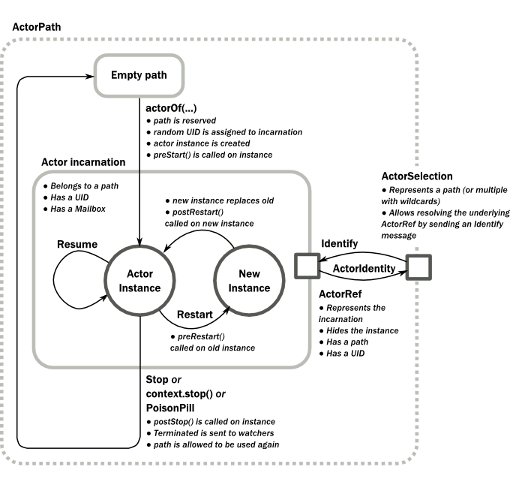
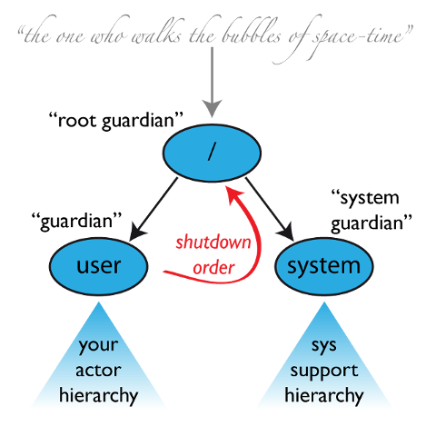
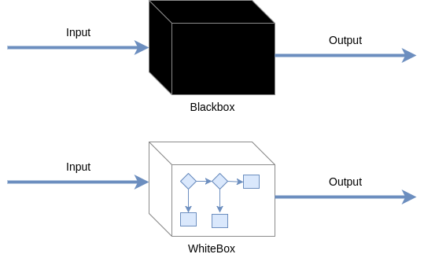

Akka't the feeling
A humble feedback on Akka after some time in production
Who are we ?

- Open source software editor
- 7 developers across two locations (Lyon / Prague)
- Mostly junior in Scala
XiVO Solution

- Open Source IPBX based on Asterisk™
- Phone Device Management
- Call routing
- Call Center Solution
- Computer telephony Integration
XiVO Architecture overview

XUC Server
- Real time message processing application
- Using Akka
- Expose API through Websocket & Rest.
Akka
“Akka is a toolkit for building highly concurrent, distributed, and resilient message-driven applications for Java and Scala”
Akka Basics
“Akka is the implementation of the Actor Model on the JVM.
- Simpler Concurrent & Distributed Systems
- Resilient
- High Performance
- Elastic & Decentralized”
“Multi-threading for dummies”
Jean-Yves Lebleu
Actors
Actors can:
- Receive messages
- Do things while processing messages
- Send messages
class HelloActor extends Actor { override def receive = { case "Hello" => sender ! "Hi !" }
A call tell B

Simple use cases are easy to implement but complexity kicks pretty soon.
A call tell B (continued)
case class Hello(name: String) case class Greetings(message: String) class HelloActor(greetingsRef: ActorRef) { override def preStart: Unit = { greetingsRef ! Hello("Jean-Pierre") } override def receive = { case Greetings(message) => println(s"$greetingsRef told $message") } } class GreetingsActor extends Actor { override def receive = { case Hello(name) => // I can do something here... sender ! Greetings(s"Hi $name!") }
Actors message processing
Akka guarantees for Actors:
- Only one message processed at a time
- No concurrency inside an actor
- At-most-once delivery
- Message ordering per sender-receiver pair
Actors Lifecycle

Actors Hierarchy

Akka @ Avencall
Akka is a toolkit for building highly concurrent,
distributed, and resilient message-driven applications forJava andScala
Actor Hierarchy
One of our major problem was designing the Actor Hierarchy.

Or the lack of designing process…
Actor Hierarchy
Is the key to have a resilient and understandable system…
- Actors dependency / discovery
- Startup / Shutdown
- Recovery
- Message path
Actor Hierarchy - Designing

Designing will help you:
- Split concerns and avoid bloated actors
- Define clear message path
- Evaluate behaviour without implementation
Bonus: The actor model is easily mapped from a real world model.
Supervision & Recovery
Actors can die and respawn without notice… So you need a strategy !
For each actor, you need to define a clear strategy for:
- Startup
- Shutdown
- Recovery
- Failure of its children
Again, designing a hierarchy of actors will help in this process.
Actor Collaboration
In a non-trivial architecture, you will need your actors to collaborate.
They will need to know each other (somehow).
Getting Actor Reference
Possible strategies:
- Inject ActorRef in Actor constructor
- Let the Actors introduce themselves
case class IntroduceMe(someFriend: ActorRef, message: String) class FriendlyActor(friend: ActorRef) extends Actor { override def preStart: Unit = { friend ! IntroduceMe(self, "Hi there !") } // ... }
Alternate strategies
- Use ActorSelection
- Use a Registry
Strategies to avoid
Avoid:
- Injecting using Cake Pattern
- Using a global object containing references (Oh…My…!)
Message
- Messages need to be immutable:
- To prevent side effects
- To avoid access exception
- And serializable if system is distributed
Bonus: Scala offers case class, use them
Message Path & Routing
Messages can be hard to track (to put it mildly)
- Define them close to where they're used.
- Avoid complex routing or message over-encapsulation
- Prefer event sourcing over query pattern
- Akka Typed ?
- Design, design, design…
Future
Mutable properties
Actors can mutate properties safely because when processing a message there is no concurrency.
However, you must make sure you are in the same context !
Future & context
Inside a Future, you are no longer inside the Akka message processing context.
object Doer { def doSomething(message: String): Future[String] = //... } class BadActor(friend: ActorRef) extends Actor { var lastMessage = "" override def receive = { case DoIt(message) => // Oh No !!! Doer.doSomething(message).map(lastMessage = _) } }
Future & context - The good way
Avoid closure and use message to update Actor properties.
object Doer { def doSomething(message: String): Future[String] = //... } class GoodActor(friend: ActorRef) extends Actor { // We should use context.become with state here var lastMessage = "" override def receive = { case DoIt(message) => Doer.doSomething(message).map(Message(_)).pipeTo(self) case Message(message) => lastMessage = message case akka.actor.Status.Failure(cause) => // Oops ! } }
Misc
EventBus
Akka offers a generic event bus mechanism with a customizable classification.
Pretty cool but…
- Memory hog when using multiple level of classification
- No death watch by default could lead to memory leak
Testing - Black or White

- Black box: Send input, assert on output
- White box: Send input, assert on inner workings
Refactoring
Refactoring can be difficult but some tips can help:
- Split concerns
- Clear message paths
- Lot of test
- Be explicit in tests (wording & coding)
Ask Pattern, Queries, Command
- The ask pattern is convenient but returns a future so be cautious.
- When used, this pattern creates a temporary actor to handle your query.
- Is there another way ?
- If you use the pattern all over, you may need to change the design
- Create a custom actor to handle this query
Actor state
Akka offers convenient ways to handle state inside an actor:
- context.become(whatYouAre): easy to use
- FSM: For advanced usage
Coding with style…
- Code consistency can be hard to maintain when evaluating patterns
- Mixing side-effect (injecting mutable object in an Actor)
- Monitoring will help
Conclusion
- And yet it works, despite all our mistakes…
- Designing you system is key
- You should read the doc ! http://doc.akka.io
Thank you
Question ?